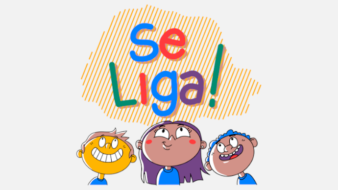

se liga O Programa Se Liga!, instituído pela Secretaria de Estado da Educação e do Esporte do Paraná (SEED), é uma iniciativa para a recuperação da participação e aprendizagem tanto de estudantes que apresentam dificuldades em conteúdos específicos, quanto àqueles que apenas desejam melhorar as notas e o rendimento.
porque infelizmente não prestei atenção nas aulas.
me dedicar mais aos estudos desde o inicio do ano letivo,prestar atenção nas aulas, fazer as tarefas e trabalhos com cuidado e pedir ajuda aos professores sempre que necessário.
